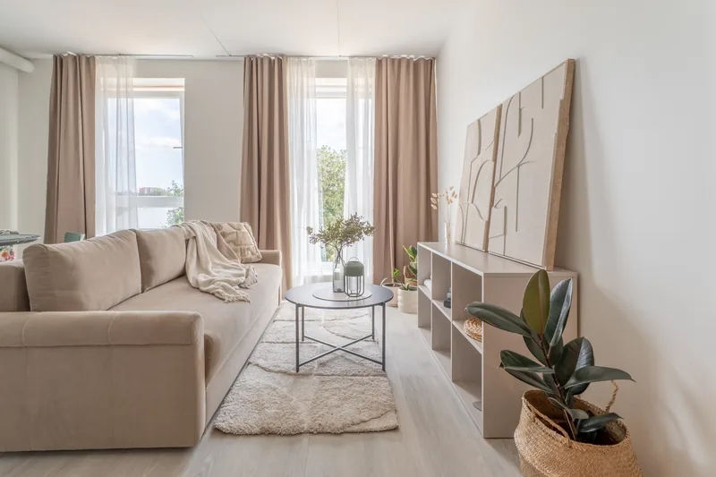

Mis on virtuaalne staging ja millal see on aus
Lühivastus
Virtuaalne staging on tühja ruumi digitaalne sisustamine: fotole lisatakse mööbel, et ostja näeks ruumi mõõtu ja võimalusi. See on aus seni, kuni ta lisab mööblit, mitte ei muuda ruumi ennast – ja kuni kuulutuses on kirjas, et tegemist on virtuaalse sisustusega.
Tühja tuba on raske hinnata. Ilma mööblita ei ole silmal midagi, mille vastu suurust mõõta, ja täiesti tühi ruum tundub fotol alati väiksem, kui ta on. Virtuaalne staging lahendab just selle ühe probleemi.
Mis see täpselt on
Ruum pildistatakse tühjana. Seejärel lisatakse fotole digitaalselt mööbel, vaip, valgusti, mõni taim. Sein, põrand, aken ja ruumi mõõdud jäävad täpselt samaks – muutub ainult see, mis ruumi sisse pandi.
See ei ole sama, mis füüsiline staging, kus mööbel päriselt kohale veetakse. Füüsiline staging maksab Eestis sadu kuni tuhandeid eurosid, virtuaalne kümneid. Meil on see +39€ tuba.

Millal see päriselt aitab
- Uusarendus enne sissekolimist. Kõik korterid on tühjad ja ühesugused. Staging näitab, kuidas ruum töötab.
- Korter, kust on juba välja kolitud. Tühi tuba ei anna ostjale midagi.
- Ebatavalise kujuga ruum. Kaldlagi, nurgeline plaan, läbikäidav tuba – staging näitab, kuhu mööbel üldse mahub.
- Tuba, mille otstarve pole ilmselge. Väike ruum, mis võib olla kabinet, lastetuba või garderoob. Staging teeb valiku ostja eest ära.
- Väga isikupärane sisustus. Vahel on tuba mööbliga raskem müüa kui ilma. Siis on lahendus tühjendada ja uuesti sisustada.
Kus jookseb piir
See on koht, kus tuleb selge olla. Virtuaalne staging on tööriist, mis võib kergesti muutuda eksitamiseks. Meie reegel on lihtne: staging lisab ruumi mööblit, ta ei muuda ruumi.
| Aus | Eksitav |
|---|---|
| Lisada tuppa diivan, laud ja vaip | Eemaldada seinalt niiskuslaik |
| Lisada tühja kööki söögilaud | Vahetada välja vana köögimööbel |
| Panna terrassile aiamööbel | Lisada aeda uus terrass |
| Lisada seinale pilt | Muuta seinavärvi või põrandakatet |
| Näidata, kuidas tuba sisustada saab | Näidata mööblit, mis päriselt ruumi ei mahu |
Parempoolne veerg ei ole ainult eetiline küsimus. See on ka praktiline: ostja tuleb näitamisele ja näeb, et niiskuslaik on alles. Sellest hetkest ei usu ta enam ühtegi kuulutuse lauset – ka neid, mis on täiesti tõsi.
Märgi see ära. Kirjuta kuulutusse üks lause: „Osa fotodest on virtuaalselt sisustatud.“ See ei nõrgesta kuulutust – see tugevdab. Ostja, kes saab teada üllatusena, tunneb end petetuna. Ostja, kellele öeldi ette, näeb hoolikat müüjat.
Millal stagingut mitte teha
- Kui ruum on juba sisustatud. Päris mööbel võidab digitaalse alati.
- Kui objekt müüakse remondiobjektina. Ostja otsib potentsiaali, mitte sisekujundust. Sisustatud pilt lööb siin ootused paigast.
- Kui eelarve on piiratud. Kui pead valima paremate fotode ja staginguga fotode vahel, vali paremad fotod. Staging halva foto peal jääb ikka halvaks fotoks.
- Vannitoas ja kitsas esikus. Siin ei ole mööblit, mida lisada, ja tulemus näeb tehislik välja.
Kui palju tube sisustada
Enamasti piisab kahest või kolmest: elutuba, magamistuba ja vajadusel söögiala. Neist saab ostja ruumi mõõdust aru ja ülejäänud tubade puhul oskab ta juba ise arvutada.
Terve korteri sisustamine on harva vajalik ja tekitab ka rohkem kahtlust – kuulutus, kus iga foto on virtuaalne, hakkab tundma renderdusena.
Virtuaalne staging maksab +39€ tuba ja on korteri Premium-paketis kahe toa ulatuses juba sees. Loe ka, mida tühja korteri pildistamisel muidu arvestada.
Vaata hindu